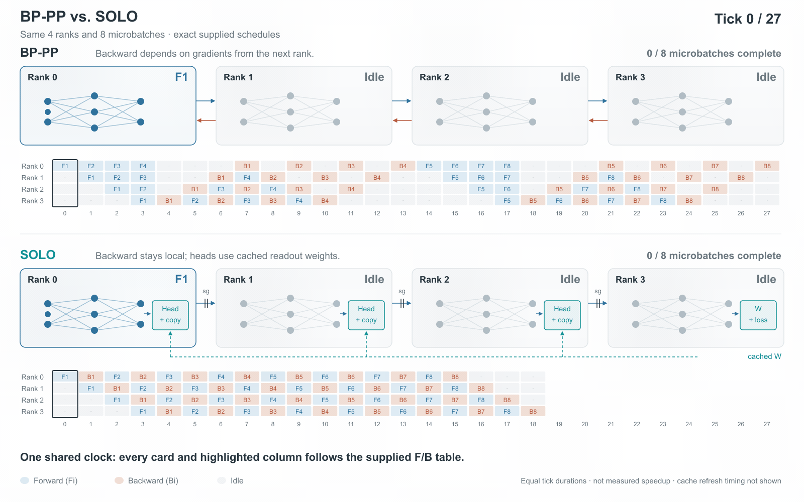

Splitting the learning: local learning at billion-parameter scale
Existing methods split the work. Local learning splits the learning.

Under backpropagation (top), each backward pass waits for a gradient from the next stage, and the first stage holds activations for four micro-batches at once. Under SOLO (bottom), each stage runs its backward pass locally and holds one. Illustrative schedule with equal tick durations, not a measured speedup.

Large language models are trained on thousands of GPUs, yet no part of a model can learn until a signal has travelled back to it from the model's last layer. That dependency determines how long each GPU has to keep intermediate results in memory and how long pipeline stages have to wait. Adding more GPUs does not make the wait disappear. Under backpropagation, that signal is the gradient computed through every later layer. I wanted to know whether parts of a model could update without waiting for it and still train a good language model. At billion-parameter scale, the results suggest they can.
In my last post, I argued that language models would eventually need some form of local learning, but that the methods available at the time were not good enough [1]. Here I describe our new paper on SOLO [2]. It pretrains Transformers of up to 2B parameters without passing gradients between modules while staying close to backpropagation in downstream accuracy. SOLO suggests that full independence is not necessary. The gradient from later layers has to be fresh for every example; the model's output mapping can be a few steps out of date.
Where the cost goes
Data parallelism, pipeline parallelism and recomputation all keep the same end-to-end learning rule. Data parallelism divides the training samples, pipeline parallelism divides the model [3, 4], and recomputation saves memory by discarding intermediate activations and rebuilding them later [5, 6]. These methods work well, but they mostly decide where to pay for global backpropagation: in memory, compute, or communication.
Local learning changes the learning rule itself. The network is partitioned into a sequence of modules, and each module is trained on a local objective computed by a small auxiliary head attached to its output [7, 8]. Gradients are stopped at module boundaries, so each module treats its input as fixed, and its update depends only on its own forward pass and local loss rather than on computation in later modules. Activations still flow forward from one module to the next, but no gradient flows back. Because this change concerns how gradients propagate through depth rather than how computation is placed on devices, it is complementary to data and pipeline parallelism: in our experiments, SOLO was combined with data parallelism for pretraining and with pipeline parallelism for the systems measurements.
Why local learning has struggled
The idea is not new. Block-wise methods have come close to backpropagation on image-classification problems [7, 8, 9], but language models have proved much less forgiving. Previous studies either stopped at much smaller models [10, 11, 12], applied local objectives only after pretraining [13], or retained a substantial performance gap [1]. Each module could learn on its own. Keeping the modules working together as models and vocabularies grew was the hard part.
One design choice matters a lot for language. Most local-learning methods give every module its own readout, the final mapping from internal features to output classes or tokens. In image classification, where the number of classes is often smaller than the feature dimension, this may not be especially costly. Language reverses that ratio: the vocabulary can be tens of times larger than the hidden width, and a poor output mapping becomes much more damaging. In our experiments, a random readout raised perplexity by up to 33% compared with a learned one [2]. A private readout also means that each module effectively learns in its own basis.
What SOLO changes
SOLO keeps the loss local but shares one learned readout across the modules [2]. Each auxiliary head uses a read-only copy of the final module's output mapping, and only the final module's loss updates it. The copy does not need to be current, so sharing it does not bring back sample-by-sample synchronization. In our runs, refreshing it every 50 steps instead of every step changed perplexity by at most 0.4%. The modules can therefore update without waiting on later layers while still working in the same basis.
Sharing works better than giving each module its own readout. Shared readouts reached lower perplexity than private ones at every scale we compared, and because the copy is read-only, it needs no gradients or optimizer state of its own. When we gave each module the same readout rotated into a different basis, perplexity got much worse. So part of the benefit seems to come from the shared basis itself.
Does it still work when the model gets large?
This was the main question for me. Removing the wait for later layers is only useful if the model still learns well; otherwise it simply trades synchronization for worse models. We pretrained Transformers from 340M to 2B parameters on 15B tokens and compared them with backpropagation trained on the same data [2]. As far as I know, these are the first billion-parameter language models pretrained with local learning. With two modules, SOLO stays within about 0.5 percentage points of backpropagation in average zero-shot accuracy across the three model sizes. The gap does not grow with scale: the relative WikiText perplexity difference slightly narrows from 340M to 2B, and in the 340M and 1.3B runs the gap forms in the first 2B tokens and then stays roughly stable.
Up to 2B parameters, the failure I was most worried about has not appeared. This is not production scale, and the next question is how far the trend holds.
What does decoupling buy?
Once modules no longer wait on later layers, their activations can be released much earlier. In a separate systems experiment, with a 1.2B-parameter model on synthetic tokens split into eight pipeline stages on one node [2], peak activation memory fell from 17.4 GB to 2.5 GB. Full recomputation reached a similar memory footprint, but SOLO was 1.29 to 1.57 times faster because it neither rebuilt activations nor waited for gradients.
The saved memory can also be put back to work. With larger micro-batches, SOLO reached up to 1.44 times the throughput of the best standard 1F1B pipeline configuration we tested at the same global batch size. Communication becomes simpler as well: activations still move forward between stages, but cross-module gradients no longer move backward. In a separate two-stage experiment, restricting the link between stages to 1 Gb/s reduced SOLO's throughput by only 1.2%, compared with 51% for 1F1B.
The local heads add extra computation, and on a fast single-node system that trade does not always pay off. Data-parallel backpropagation was still the fastest configuration we measured. It becomes more interesting when memory and communication, rather than arithmetic, are the bottleneck. Compute capability has improved faster than memory and interconnect bandwidth for years [14]. If some extra local computation can buy shorter activation lifetimes and much less backward communication, that trade may become increasingly useful as training spreads across larger and less tightly connected systems [15].
What this suggests
Taken together, these results suggest that waiting for later layers is not an unavoidable cost of training large language models. Models up to 2B parameters trained without that wait and stayed close to backpropagation, and in our pipeline experiments the freed memory became higher throughput, with far less sensitivity to slow links. The modules did not have to be fully independent for this to work. They shared one slowly changing piece of information, the final module's readout, and read it a few steps late. Local learning has now pretrained billion-parameter language models; what remains is to find out how far it scales.
What remains untested
I am not claiming that SOLO replaces backpropagation. The largest model we trained is 2B parameters, and 15B training tokens is still modest for models of this size [16]. The auxiliary heads add roughly 11–13% FLOPs per token with two modules, and our systems experiments are currently limited to a single node.
In my previous post, I argued that a serious local-learning method should at least avoid a quality gap that gets worse with scale, and that saving memory should eventually produce a real wall-clock benefit [1]. SOLO gives encouraging evidence on both. The gap stays small from 340M to 2B, and in the pipeline setting it is faster than checkpointed backpropagation. The larger test is still missing.
The next step is to train at 7B parameters and beyond, on much larger token budgets and against a matched backpropagation baseline. I also want to test longer contexts, where activation memory grows with sequence length; more pipeline stages, which will need cheaper auxiliary heads; and pipelines across several nodes connected by ordinary networks rather than NVLink. Making SOLO fast in practice will also need optimized operators and kernels for its local updates and pipeline schedule, the kind of engineering backpropagation has had for years.
Last time I wrote that the experiments that would settle this were within reach of a single lab [1]. That was true of the 2B experiments, but not of the next ones, which need substantially more compute and access to multi-node systems. I am looking for partners who can provide GPU time for this work. If you are interested, please contact me at bojian.yin@ia.ac.cn.
References
- Yin, B. (2026). Why language models will need local learning, and what it will take to get there [Blog post].
- Yin, B., Wang, S., Pan, Y., and Li, G. (2026). SOLO: Pretraining billion-parameter language models with shared-output local learning. arXiv:2609.35440.
- Huang, Y., Cheng, Y., Bapna, A., Firat, O., Chen, M. X., Chen, D., Lee, H., Ngiam, J., Le, Q. V., Wu, Y., and Chen, Z. (2019). GPipe: Efficient training of giant neural networks using pipeline parallelism. NeurIPS 32. arXiv:1811.06965.
- Narayanan, D., Shoeybi, M., Casper, J., LeGresley, P., Patwary, M., Korthikanti, V., Vainbrand, D., Kashinkunti, P., Bernauer, J., Catanzaro, B., Phanishayee, A., and Zaharia, M. (2021). Efficient large-scale language model training on GPU clusters using Megatron-LM. SC 2021.
- Chen, T., Xu, B., Zhang, C., and Guestrin, C. (2016). Training deep nets with sublinear memory cost. arXiv:1604.06174.
- Korthikanti, V., Casper, J., Lym, S., McAfee, L., Andersch, M., Shoeybi, M., and Catanzaro, B. (2022). Reducing activation recomputation in large transformer models. arXiv:2205.05198.
- Belilovsky, E., Eickenberg, M., and Oyallon, E. (2019). Greedy layerwise learning can scale to ImageNet. ICML 2019.
- Belilovsky, E., Eickenberg, M., and Oyallon, E. (2020). Decoupled greedy learning of CNNs. ICML 2020.
- Nøkland, A. and Eidnes, L. H. (2019). Training neural networks with local error signals. ICML 2019.
- Laskin, M., Metz, L., Nabarro, S., Saroufim, M., Noune, B., Luschi, C., Sohl-Dickstein, J., and Abbeel, P. (2020). Parallel training of deep networks with local updates. arXiv:2012.03837.
- Shing, M., Koyama, M., and Akiba, T. (2026). DiffusionBlocks: Block-wise neural network training via diffusion interpretation. ICLR 2026. arXiv:2506.14202.
- Sushma, N. M., Nagarsekar, A., Teguemne Fokam, C., Schiewer, R., Pal, A. K., Subramoney, A., and Kappel, D. (2026). Breaking chains with trees: Model-parallel deep learning with O(log N) time complexity. arXiv:2606.21497.
- Shi, H., Han, T., Wang, P., Wang, Z., Yang, X., and Su, J. (2026). Rethinking local learning: A cheaper and faster recipe for LLM post-training. arXiv:2605.04913.
- Gholami, A., Yao, Z., Kim, S., Hooper, C., Mahoney, M. W., and Keutzer, K. (2024). AI and memory wall. IEEE Micro. arXiv:2403.14123.
- Distributed and decentralised training: Technical governance challenges in a shifting AI landscape (2025). arXiv:2507.07765.
- Hoffmann, J., Borgeaud, S., Mensch, A., et al. (2022). Training compute-optimal large language models. NeurIPS 35. arXiv:2203.15556.